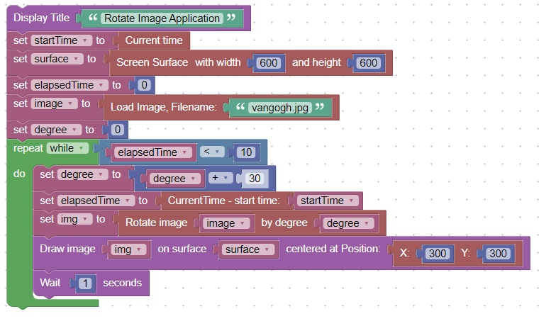
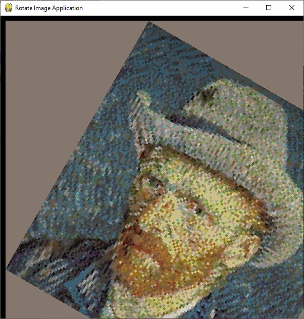

<h1>Rotate Image</h1>
<h2>New Concepts</h2>
   <table border="2px solid">
     <tr><th bgcolor="blue">Concept</th><th bgcolor="blue">Description</th></tr>  
     <tr><td><center>1</center></td><td>Images can be rotated</th></tr>
   </table>
<h2>Code</h2>
This code will rotate an image for 10 seconds.<br>
<br>
Here is what the screen looks like<br>
<br>
<hr>
<center></center>